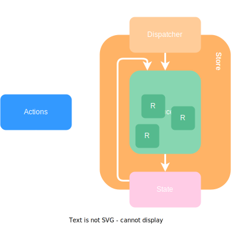

Managing component state
Pass data through the component tree without having to pass props down manually at every level.
Create a context and provide it.
Use the context in any nested component.
A predictable, global state container for JavaScript apps.
A predictable, global state container for JavaScript apps.
